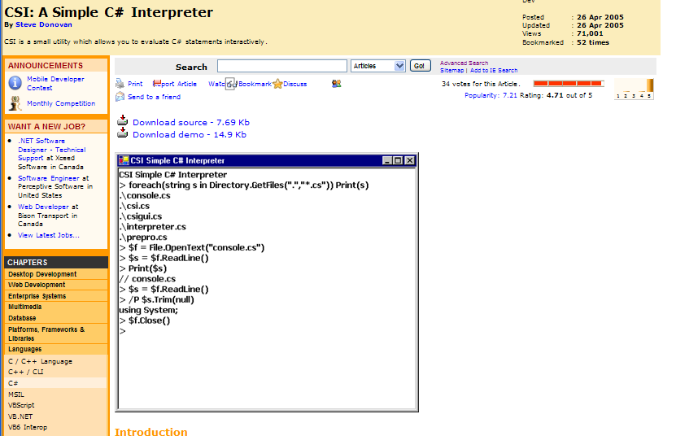

Many
users who prefer interactive scripting environments like
Python
will be pleased to find similar environment targeting C#
syntax. CS-Scriptis distributed with third-party
interactive
C# interpreter
CSI (CSI:
A Simple C# Interpreter). You can find
it in <cs-script>\Lib\tools\CSI
directory.

Please keep in mind that CSI has nothing to do with CS-Script and it is
being distributed as a third-party
tool with no support what so ever.